컴퓨터활용능력-1급 (2006-02-19 기출문제)
1과목: 컴퓨터 일반
1. 한글 Windows에서 프린터 스풀(SPOOL) 기능에 대한 설명으로 올바른 것은?
- 스풀링 단위는 인쇄할 문서 전체 단위로만 스풀링이 가능하다.
- 프린터가 인쇄중이라도 다른 응용프로그램 실행이 가능하다.
- 스풀링은 인쇄할 내용을 프린터로 직접 전송한다.
- 저속의 프린터 사용 시 컴퓨터 효율이 크게 저하된다.
(정답률: 78%)

2. 다음 중 RISC 마이크로세서에 대한 설명 중 틀린 것은?
- 명령의 대부분은 1머신 사이클에 실행되고, 명령 길이는 고정이며, 명령 세트는 단순한 것으로 구성
- 어드레싱 모드가 적으며, 마이크로프로그램에 의한 제어를 줄이고, 와이어드 로직을 많이 이용
- 어셈블러 코드를 읽기 어려울 뿐만 아니라 파이프라인을 효과적으로 사용하기 위해서 일부 어셈블러 코드를 시계열로 나열하지 않은 부분이 존재
- 레지스터 수가 적으며 마이크로프로그램을 저장하는 칩의 공간에 레지스터를 배치
(정답률: 64%)
3. 다음의 제어판 기능 중 PNP 기능에 의해 동작하는 기능은?
- 새 하드웨어 추가
- 날짜와 시간
- 전원 옵션
- 음성
(정답률: 76%)
4. 다음 한글 Windows의 [TCP/IP 등록정보]에 대한 설명 중 올바르지 못한 것은?
- IP 주소는 인터넷에 연결된 호스트 컴퓨터의 유일한 주소로, 네트워크 주소와 호스트 주소로 구성되며, 32bit 주소를 8비트씩 점(.)으로 구분한다.
- 서브네트 마스크는 IP 주소의 네트워크 주소와 호스트 주소를 구별하기 위해 IP 수신인에게 허용하는 32 비트 주소로, 사용자 컴퓨터가 속한 네트워크를 식별하는데 사용된다.
- 게이트웨이는 다른 네트워크와의 데이터 교환을 위한 출입구 역할을 하는 장치이다.
- 찾을 DNS 서버 주소는 숫자 형태로 된 도메인 네임을 숫자로 된 IP주소로 변환해 주는 서버(DNS)의 도메인 이름을 지정한다.
(정답률: 66%)
5. 사용자가 방문했던 내용을 담고 있는 캐시 서버로서 방화벽의 기능까지 지원하는 것은?
- Client Server
- Web Server
- Proxy Server
- TCP/IP
(정답률: 83%)
6. 동영상의 압축 표준안 중에서 양방향 멀티미디어의 구현을 통해 화상통신이 가능하도록 비디오/오디오를 압축하기 위한 표준안은?
- Cakewalk
- WAVE
- MPEG4
- MP3
(정답률: 85%)
7. 한글 Windows의 네트워크를 설정하는데 있어서 전화접속에 관련된 프로토콜은 무엇인가?
- ARP
- PPP(Point-to-Point)
- NetBEUI
- IPX
(정답률: 57%)
8. 뉴스 그룹에서 스레드(Thread)는 무엇을 말하는가?
- 뉴스 그룹 서버의 데이터 전송 체계를 일컫는 말이다.
- 뉴스 그룹으로의 사용자 접속 환경을 지칭하는 것이다.
- 어떤 내용에 대한 기사와 그 기사에 대한 질문, 답변들을 묶어서 정리한 체계를 말한다.
- 뉴스 그룹에 기사를 올리는 행위를 말한다.
(정답률: 71%)
9. 비디오 데이터를 구성하는 프레임 1개의 크기가 1024 X 768 픽셀이고 픽셀당 3 바이트로 저장하려고 할 때 1초간 비디오 정보를 저장하기 위해 필요한 저장 용량은? (단, 비디오 데이터는 1초당 30 프레임으로 구성된다고 가정한다.)
- 약 9MByte
- 약 26.5MByte
- 약 67.5MByte
- 약 1.7GByte
(정답률: 55%)
10. 하드웨어가 제대로 작동하지 않을 경우 체크해야 하는 항목 으로 가장 거리가 먼 것은?
- 같은 장치가 여러 번 설치되었는지 확인하고 중복 설치된 장치는 삭제한다.
- Format하고 운영체제를 다시 설치한다.
- 서로 다른 장치가 같은 IRQ를 사용하는지 확인한다.
- 설치된 장치에 적합한 드라이버가 설치되었는지 확인한다.
(정답률: 84%)
11. 미국표준협회에서 제정한 데이터 통신에 널리 사용하기 위한 정보 교환용 코드로, 한 문자를 표시하는 데 7개의 데이터 비트(data bit)와 1개의 패리티 비트(parity bit)를 사용하며, 128개의 문자코드가 정의되어 있는 코드는 무엇인가?
- ASCII 코드
- BCD 코드
- EBCDIC 코드
- UNI 코드
(정답률: 80%)
12. 무선 접속을 통하여 휴대폰이나 PDA등에 웹 페이지의 텍스트와 이미지 부분이 표시될 수 있도록 해주는 웹 프로그래밍 언어는?
- WML
- VRML
- SGML
- XML
(정답률: 66%)
13. 컴퓨터 시스템에 EIDE 방식의 두 번째 하드디스크를 추가할 때에 필수 작업에 해당하지 않는 것은?(문제 오류로 실제 시험장에서는 2, 3번이 정답 처리 되었습니다. 여기서는 1번을 정답 처리 합니다.)
- CMOS 설정
- 포맷(FORMAT)
- 드라이브 레이블 설정
- 하드디스크의 마스터/슬레이브 점퍼 설정
(정답률: 83%)
14. 다음 중 전송 오류 검출 방식이 아닌 것은?
- CRC(순환 중복 검사) 방식
- 패리티 검사 방식
- 정마크 부호 방식
- CSMA/CD(매체접근 제어) 방식
(정답률: 70%)
15. 인터넷 서비스에 대한 설명으로 올바르지 않은 것은?
- Telnet : 인터넷상의 다른 컴퓨터에 로그인(log-in)하여 사용할 수 있게 하는 서비스
- WAIS(Wide-Area Information Service) : 인터넷에 흩어져 있는 여러 곳의 데이터베이스로부터 데이터를 검색할 수 있게 하는 서비스
- IRC(Internet Relay Chat) : 인터넷을 통해 채팅을 할 수 있도록 하는 서비스
- PING(Packet Internet Gopher) :원격 컴퓨터의 사용자 정보를 알아보기 위해 사용되는 서비스
(정답률: 74%)
16. 인터넷을 사용할 때 유즈넷에서 지켜야 할 예절 중 올바르지 않은 것은?
- 그룹에 주제에 동떨어진 질문은 하지 않는다.
- 답변은 꼭 질문자의 메일로 보낸다.
- 같은 내용의 질문을 중복하여 올리지 않는다.
- 질문과 답변은 상세하고 친절하게 한다.
(정답률: 86%)
17. 한 대의 프린터를 가지고 여러 대의 PC에서 프린트를 하려고 한다. 이때 올바른 프린터 공유 방법은?
- [제어판]-[프린터 및 하드웨어]-[프린터 추가]-[로컬 프린터 선택]
- [제어판]-[프린터 및 팩스]-[프린터 선택]-[공유]
- [제어판]-[프린터 및 하드웨어]-[프린터 추가]-[포트 선택]
- [제어판]-[공유]-[프린터를 선택]-[기본 프린터 설정]
(정답률: 78%)
18. 다음 중 웹 프로그래밍 언어에 대한 설명이 잘못된 것은?
- ASP : MS사에서 제작하였고, 클라이언트 측에서 동적으로 수행되는 페이지를 만드는 언어
- JSP : 자바를 기반으로 하고 서버 측에서 동적으로 수행하는 페이지를 만드는 언어
- PHP : Linux, Unix, Window 운영체제에서 사용 가능하다.
- XML : 기존 HTML 단점을 보완하여 문서의 구조적인 특성들을 고려하여 문서들을 상호 교환할 수 있도록 설계된 언어이다.
(정답률: 65%)
19. 다음 중 한글 Windows에서 [제어판]-[시스템]에 있는 [장치관리자]가 할 수 있는 작업으로 옳은 것은?
- 하드웨어 드라이버 업데이트
- 워드 응용 프로그램 추가
- 시동디스크 작성
- 사용하지 않는 응용프로그램 제거
(정답률: 71%)
20. 인터넷의 기본적 통신 프로토콜인 TCP/IP의 응용 서비스 계층에 관련된 프로토콜로 가장 거리가 먼 것은?
- TELNET
- FTP
- SMTP
- ICMP
(정답률: 64%)
2과목: 스프레드시트 일반
21. 엑셀에서 제공되는 차트형식 중 각 지역별 분포, 밀도 등 실제 지역에 기초한 데이터를 가정 적절하게 표시할 수 있는 차트 형식은 다음 중 어느 것인가?
- 지도차트
- 원형차트
- 방사형차트
- 꺾은선차트
(정답률: 73%)
22. 다음 중 매크로 기록 대화상자에 대한 설명으로 잘못된 것은?
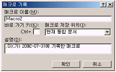
- 매크로 이름에는 공백을 포함할 수 없다.
- 매크로 저장 위치로 현재 통합문서, 새 통합문서, 개인용 매크로 통합문서가 있다.
- 설명은 액셀에서 기본적으로 설정해 놓았기 때문에 사용자가 임의로 수정할 수 없다.
- 'Macro2'는 매크로를 기록할 때 엑셀에서 기본적으로 설정한 이름으로 사용자가 수정할 수 있다.
(정답률: 80%)
23. 숫자 24600을 입력한 후 아래의 표시형식을 적용했을 때 표시되는 결과로 맞는 것은?
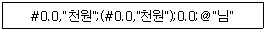
- 24.6천원
- 24,600
- 25,000천원
- (25.0천원)
(정답률: 80%)
24. 다음 그림과 같이 "표" 기능을 사용하여 이자율에 따른 이자액을 계산하려고 한다. 이 때 실행하여야 할 작업내용에 대한 설명으로 옳지 않은 것은?
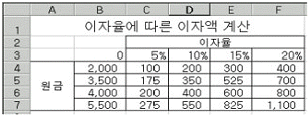
- 수식이 입력되어야 하는 [C4] 셀을 선택하고 수식 "=A2*B2"를 입력한다.
- 표의 범위([B3:F7])를 설정한 후 [데이터]-[표]를 선택한다.
- [표] 대화상자가 표시되면 "행 입력 셀"은 [A2] 셀과, "열 입력 셀"은 [B2] 셀을 지정한 후 [확인]을 선택한다.
- 자동으로 결과가 구해진 셀을 하나 선택해서 살펴보면 "{=TABLE(A2,B2)}"와 같은 배열 수식이 들어 있다.
(정답률: 62%)
25. 아래의 시트에서 [F2:G4]를 참조하여 각 사원의 보너스액을 계산하려고 한다. [D2] 셀에 수식을 작성한 후 채우기 핸들을 이용하여 [D3:D5]를 채우려고 한다. [D2] 셀에 입력될 수식으로 적당한 것은? (보너스액 = 본봉 * 부서별 보너스율)
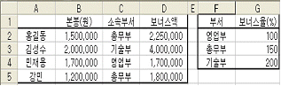
- =VLOOKUP($C2,F2:G4,2,0)*B2/100
- =VLOOKUP($C$2,$F2:$G4,2,0)*B2/100
- =VLOOKUP($C2,$F2:$G4,2,0)*B2/100
- =VLOOKUP($C2,F$2:G$4,2,0)*B2/100
(정답률: 44%)
26. Visual Basic Editor에서 매크로 실행을 하기 위해 사용되는 바로 가기 키는?
- F5
- F8
- F9
- F11
(정답률: 46%)
27. 다음 중 엑셀에서 제공되는 함수에 대한 설명으로 옳지않은 것은?
- CONCATENATE : 여러 텍스트 항목을 한 텍스트로 합친다.
- TRANSPOSE : 배열의 행과 열의 방향을 바꾼다.
- DSTDEV : 데이터베이스의 필드에서 찾을 조건과 일치 하는 값을 사용하여 표본으로부터 모집단의 표준 편차를 추정한다.
- GEOMEAN : 양수 데이터의 조화평균을 구한다.
(정답률: 64%)
28. 다음 설명 중 잘못된 것은 어느 것인가?
- "보내기" 명령을 이용하면 워크시트를 바로 메일로 전송할 수 있다.
- 워크시트를 웹 페이지로 저장은 가능하지만 웹 페이지로 미리 보기는 실행할 수 없다.
- 인쇄 영역을 설정하면 인쇄 영역에 포함되지 않은 셀들은 인쇄할 수 없다.
- 인쇄 제목으로 반복할 행의 설정은 [파일]-[페이지 설정]의 [시트] 탭에서 하면 된다.
(정답률: 68%)
29. 아래 시트의 "판매수량"에서 "판매수량"의 평균값 이상인 데이터만을 찾기 위한 고급필터의 조건으로 올바른 것은?
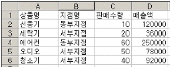
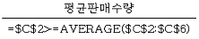
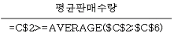
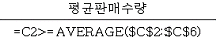
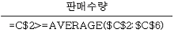
(정답률: 62%)
30. 다음 중 연속적인 위치에 있고, 데이터가 입력되어 있는 여러 개의 셀을 범위로 설정한 후, 셀 병합을 실행하였을 때의 결과에 대한 설명으로 올바른 것은?
- 기존에 입력되어 있던 데이터들이 한 셀에 모두 표시된다.
- 데이터가 들어 있는 여러 셀을 병합할 수 없다.
- 가장 아래쪽 또는 오른쪽의 셀 데이터만 남고 나머지 셀 데이터는 모두 지워진다.
- 가장 위쪽 또는 왼쪽의 셀 데이터만 남고 나머지 셀 데이터는 모두 지워진다.
(정답률: 69%)
31. [인쇄 미리 보기] 기능에 대한 설명으로 잘못된 것은?
- [설정]-[페이지]에서 용지의 방향을 설정할 수 있다.
- 인쇄 미리 보기를 실행한 상태에서 마우스 끌기로 여백과 행의 높이를 조절할 수 있다.
- 인쇄될 내용을 확대하여 볼 수 있다.
- [설정]-[시트]에서 눈금선을 설정할 수 있다.
(정답률: 73%)
32. 아래의 시트에서 전체 데이터[A1:E5]를 이용하여 대리점별, 분기별 매출액을 비교하기 위해 하나의 차트를 작성하려고 할 때 다음 중 가장 적합하지 않은 것은?
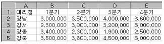
- 원형
- 분산형
- 도넛형
- 막대형
(정답률: 69%)
33. Visual Basic Editor에서는 사용자의 편의를 위하여 프로그램 개발 환경을 쉽게 변경할 수 있는데 다음 중 폼의 모눈 표시 여부나 오류 처리 방식 등을 설정할 수 있는 것은?
- [도구] - [옵션] - [편집기] 탭
- [도구] - [옵션] - [일반] 탭
- [보기] - [속성 창]
- [보기] - [도구 모음] - [사용자 정의 폼]
(정답률: 48%)
34. [외부 데이터 가져오기]를 통하여 읽어 들일 수 없는 데이터는 무엇인가?
- Microsoft Access 파일의 테이블에 저장된 데이터
- Microsoft Word 파일에 저장된 표 데이터
- 쿼리에서 만들어진 질의에 대한 결과 데이터
- 일정한 너비나 기호로 구분된 텍스트 형식의 파일에 저장된 데이터
(정답률: 71%)
35. 다음 중 날짜 및 시간 데이터 입력에 대한 설명으로 옳지 않은 것은?
- 날짜 입력에는 '/'(slash)나 '-'(hyphen)을 이용하여 연, 월, 일을 구분한다.
- 날짜와 시간을 같은 셀에 입력할 때는 날짜 뒤에 한 칸 띄우고 시간을 입력한다.
- 현재 시간 입력은 [Shift+Ctrl+;]을 오늘 날짜 입력은 [Ctrl+;]을 사용한다.
- 시간 입력은 24시간 기준으로만 시간이 입력되어 오전(am)/오후(pm)로 표시할 수 없다.
(정답률: 83%)
36. 다음 그림에서 [A1] 셀에서 [Ctrl] 키를 누른 채 채우기 핸들을 끌었을 때 [A4] 셀에 입력되는 값은?
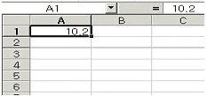
- 10.2
- 10.8
- 13.2
- 10.5
(정답률: 64%)
37. 아래의 시트에서 [A6] 셀에 수식"=SUM(OFFSET(A1,1,0,3,1))"을 입력했을 때 알맞은 결과 값은?
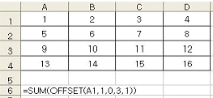
- 6
- 9
- 15
- 27
(정답률: 48%)
38. 아래의 시트에서 부서명이 "판매1부"인 직원들의 급여 평균을 [C10] 셀에 구하는 배열 수식으로 올바른 것은?
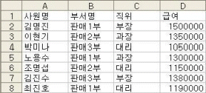
- {=AVERAGE(B2:B8="판매1부",D2:D8)}
- ={AVERAGE(B2:B8="판매1부",D2:D8)}
- {=AVERAGE(IF(B2:B8="판매1부",D2:D8))}
- ={AVERAGE(IF(B2:B8="판매1부",D2:D8))}
(정답률: 72%)
39. 아래와 같이 대상 개체의 이름을 다시 참조하지 않아도 여러 가지 메소드나 속성을 지정할 수 있으며, 또한 프로그램의 길이를 줄일 수 있는 것으로 다음 중 밑줄(__)에 들어갈 구문으로 올바른 것은?
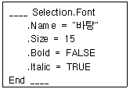
- Do
- With
- For
- Select
(정답률: 56%)
40. [피벗 테이블/피벗 차트 마법사] 3단계에서 [옵션]을 선택하면 [피벗 테이블 옵션] 대화상자에서 피벗 테이블에 대한 다양한 내용을 설정할 수 있다. 이때 [피벗 테이블 옵션] 대화상자에서 설정할 수 없는 것은?
- 행의 총합계 표시 여부
- 열의 총합계 표시 여부
- 피벗 테이블 각 필드의 표시 형식 설정
- 표 자동 서식 표시 여부
(정답률: 54%)
3과목: 데이터베이스 일반
41. 입력마스크를 아래와 같이 정의하고 "sun", "moon"의 데이터를 각각 입력하였을 때 테이블에 입력된 결과는?
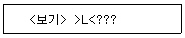
- SUN, MOON
- sun, moon
- Sun, Moon
- sUN, mOOn
(정답률: 78%)
42. 다음 중 ADO (ActiveX Data Object)개체의 설명으로 옳지 않은 것은?
- 데이터베이스에 접근하기 위한 개체로서 사용은 비교적 쉽지만 속도가 느리다.
- ASP를 이용하여 웹 사이트를 개발할 수도 있다.
- 레코드의 수정, 추가, 삭제 등 편집 작업을 할 수 있다.
- 데이터베이스에 포함된 각종 개체를 열 수 있다.
(정답률: 58%)
43. 다음 명령을 실행했을 때 결과로 옳은 것은?
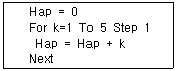
- 변수 k에 6이 저장된다.
- 변수 Hap에 15가 저장된다.
- 변수 k에 4가 저장된다.
- 변수 Hap에 10이 저장된다.
(정답률: 69%)
44. 데이터베이스의 정의에 대하여 잘못 설명된 것은?
- 하나의 응용 프로그램이나 응용 시스템을 위한 데이터가 아니라, 한 조직에 있는 여러 응용 시스템들이 공용으로 소유하고 유지하며 이용하는 공용 데이터
- 책장이나 화일, 케비넷 등에 들어 있는 데이터가 아니라 디스크와 같이 컴퓨터에 접근하여 처리할 수 있는 저장 장치에 수록된 데이터
- 복잡한 부작용을 초래하는 동일한 데이터의 중복이 전혀 존재하지 않는 데이터의 집합
- 단순한 데이터의 집합체가 아니라 한 조직의 고유 기능을 수행하기 위해 구성된 데이터의 집합
(정답률: 71%)
45. 다음 중 그룹(집단) 함수에 속하지 않는 것은 무엇인가?
- SIGN()
- SUBTOTAL()
- LARGE()
- SUMPRODUCT()
(정답률: 70%)
46. 폼에서 콤보상자 컨트롤에 대한 설명으로 옳지 않은 것은?
- 콤보상자에서 입력한 값을 테이블에 저장할 수 있다.
- 테이블나 쿼리를 이용하여 콤보상자에 값을 넣을 수 있다.
- 콤보상자에서 값을 선택하여 선택된 값에 의해서 레코드를 검색할 수 있다.
- 콤보상자에서는 값을 두개 이상 선택할 수 있다.
(정답률: 68%)
47. 다음 SQL문으로 알 수 있는 사항이 아닌 것은?
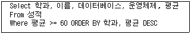
- 성적 테이블에서 검색을 수행한다.
- 평균 60점 이상인 학생만 검색대상이 된다.
- 검색 결과를 학과와 평균의 내림차순으로 정렬한다.
- 학과, 이름, 데이터베이스, 운영체제, 평균 열을 검색한다.
(정답률: 56%)
48. 다음의 보고서에 있는 "서울 지역에 거주하는 회원 수는 3명" 부분과 같이 출력하기 위하여 입력란에 작성해야 하는 식으로 옳은 것은? (단, "서울"은 [주소] 필드에 저장된 값이며, "3"은 해당 주소에 거주하는 회원 수를 관련 함수로 사용하여 산출해야 함.)
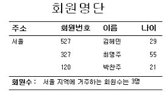
- ="[주소] 지역에 거주하는 회원수는 " & Count([회원번호]) & "명"
- ="[주소] 지역에 거주하는 회원수는 " & sum([이름]) & "명"
- =[주소] & " 지역에 거주하는 회원수는 " & Count([주소]) & "명"
- =[주소] & " 지역에 거주하는 회원수는 " & sum([나이]) & "명"
(정답률: 71%)
49. 다음 중 테이블에서 인덱스로 설정할 수 있는 필드의 데이터 형식으로만 구성된 것은?
- 논리형(예/아니오), 숫자, 메모
- 메모, 하이퍼링크, 텍스트
- 숫자, 텍스트, 메모
- 텍스트, 통화, 일련번호
(정답률: 64%)
50. 컨트롤이 선택되어 있는 상태에서 어떤 키를 눌러야 속성 창을표시할 수 있는가?
- [Alt] + [Enter]
- [Ctrl] + [Enter]
- [Shift] + [Enter]
- [Alt] + [A]
(정답률: 62%)
51. 다음 중 보고서의 그룹화에 대한 설명으로 옳지 않은 것은?
- 그룹화란 동일한 속성을 가지고 있는 필드를 통합화하여 나열하는 것이다.
- 정렬 및 그룹화 창에서 그룹화 하려는 필드를 선택하고, 그룹속성에서 그룹 머리글과 그룹 바닥 글을 둘 다 반드시 "예"로 선택한다.
- 필드의 데이터 형식이 메모나 하이퍼링크인 것은 그룹화 할 수 없다.
- 보고서에서 표시되는 필드의 내용을 보다 효율적으로 전달하기 위한 기능이다.
(정답률: 65%)
52. 다음 쿼리의 유형에 대한 설명으로 옳지 않은 것은?
- 크로스탭 쿼리는 실행할 때 레코드 검색 조건이나 필드에 삽입할 값과 같은 정보를 입력받아 실행할 수 있다.
- 선택 쿼리는 가장 일반적인 유형의 쿼리로 레코드를 그룹으로 묶어 합계, 개수, 평균, 기타 요약 등을 계산할 수 있다.
- SQL 쿼리는 SQL 문을 사용하여 만드는 쿼리로 관계형 데이터베이스를 업데이트하고 관리할 수 있다.
- 실행 쿼리는 여러 레코드를 한꺼번에 변경하거나 이동할 수 있다.
(정답률: 39%)
53. 테이블간의 관계를 설정할 때 일대일 관계가 성립하기 위한 조건으로 올바른 것은?
- 양쪽 테이블의 연결 필드가 모두 중복 불가능의 인덱스나 기본 키로 설정되어 있는 경우에 가능하다.
- 어느 한쪽의 테이블의 연결 필드가 중복 불가능의 인덱스나 기본 키로 설정되어 있으면 가능하다.
- 오른쪽 관련 테이블의 연결 필드가 중복 불가능의 인덱스나 기본 키로 설정되어 있는 경우에 가능하다.
- 양쪽 테이블의 연결 필드가 모두 중복 가능한 인덱스나 후보 키로 설정되어 있는 경우에 가능하다.
(정답률: 60%)
54. 데이터베이스 설계 시 데이터의 정규화(Normalization)에 대한 설명 중 옳지 않은 것은?
- 데이터의 이상(Anomaly) 현상이 발생하지 않도록 하는 것이다.
- 속성(Attribute) 수가 적은 릴레이션 스키마들로 분할하는 과정이다.
- 릴레이션의 속성들 사이의 종속성 개념에 기반을 두고 이러한 종속성을 제거하는 과정이라고 할 수 있다.
- 릴레이션을 항상 최상위 수준의 정규형으로 정규화해야 한다.
(정답률: 71%)
55. 보고서 작성 시 그룹화와 관련된 사항 중 옳지 않은 것은?
- 그룹화 된 레코드들을 내부적으로 다시 그룹화 할 수 있다.
- 날짜/시간 필드를 그룹화하면 연도/분기/월 등 세부적인 그룹화가 가능하다.
- 텍스트 필드를 그룹화하면 전체 필드의 값이 일치하는 경우에만 같은 그룹으로 인식한다.
- 그룹별로 머리글과 바닥글을 지정할 수 있다.
(정답률: 73%)
56. 폼에서 '회원등급' 컨트롤의 속성이 다음과 같이 설정되었다. 이에 대한 설명으로 옳지 않은 것은?
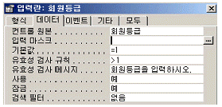
- 새 레코드를 작성할 때에 회원등급 필드에 자동으로 입력되는 값은 1이다.
- 필드 값으로 1보다 큰 값이 입력되면 "회원등급을 입력하시오."라는 메시지가 나타난다.
- 폼 필터 창을 사용 할 때에 회원등급 필드의 값이 표시되지 않는다.
- 회원등급 필드의 값이 화면상에 보이지만 수정할 수는 없다.
(정답률: 54%)
57. 테이블에서 이미 작성된 필드의 순서를 변경하려고 할 때 옳지 않은 것은?
- 데이터시트 보기에서 이동시킬 필드를 선택한 후 새로운 위치로 드래그 앤 드롭 하여 필드를 이동시킬 수 있다.
- 디자인 보기에서 이동시킬 필드를 선택한 후 새로운 위치로 드래그 앤 드롭 하여 필드를 이동시킬 수 있다.
- 디자인 보기에서 한번에 여러 개의 필드를 선택한 후 이동시킬 수 있다.
- 데이터시트 보기에서「잘라내기」와「붙여넣기」를 이용 하여 필드를 이동시킬 수 있다.
(정답률: 53%)
58. 다음 중 "보고서 바닥글" 구역에 "=COUNT(*)"를 입력할 때 출력되는 결과로 올바른 것은?
- 그룹별 레코드의 개수
- 전체 레코드의 개수
- 그룹별 최고값
- 같은 값을 갖는 레코드의 개수
(정답률: 73%)
59. 다음 중 폼에서 컨트롤 작업에 대한 설명으로 가장 옳지 않은 것은?
- 폼의 컨트롤을 특정 필드에 바운드 시키려면 "컨트롤 원본"속성을 이용한다.
- 목록상자나 콤보상자는 특정 필드에 바운드 시킬 수 없다.
- 필드목록에서 특정 필드이름을 끌어와 폼에 드롭 시키면 컨트롤을 생성하고 자동적으로 해당 필드에 바운드 시킨다.
- 컨트롤에 표시된 값을 수정하면 바운드된 필드의 값도 변경된다.
(정답률: 65%)
60. 도서명에 '액세스'라는 단어가 포함된 도서 정보를 검색하려고 할 때, 다음 SQL문의 WHERE절에 들어갈 조건으로 적당한 것은?
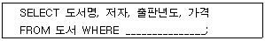
- 도서명 = '%액세스%'
- 도서명 IN '%액세스%'
- 도서명 BETWEEN '%액세스%'
- 도서명 LIKE '%액세스%'
(정답률: 67%)